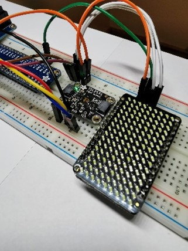
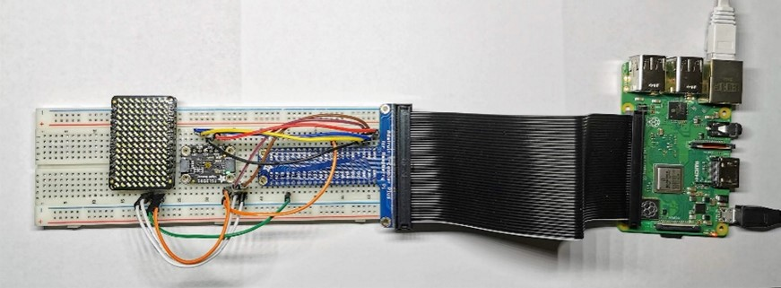

Introduction
The Raspberry Pi is a portable computer that is inexpensive, compact, and customizable. It can function as a normal computer. It can be loaded with a full operating system with a GUI and downloadable programs. It is compatible with standard peripherals, such as keyboard, mouse, and computer monitors. The new model of the Raspberry Pi: Raspberry Pi 4, has up to 8 GB of SDRAM, a quad-core processor, ethernet, Wi-Fi, and Bluetooth functionality, and a variety of other ports. Raspberry Pi can be hooked up to a plethora of sensors as well. Sensors can read basic user input, environmental properties, incoming wireless signals, and biometrics. These sensors, the Python programming support built into Raspberry, its low cost, and small form-factor make it a great tool for developing and testing sensor networks and embedded systems.
For phase one of our project, we chose to combine a Raspberry Pi (3B+) with a sensor (Adafruit TSL2591 High Dynamic Range Digital Light Sensor) and light output (LED Charlieplexed Matrix - 9x16 LEDs in conjunction with a IS31FL3731 16x9 Charlieplexed PWM LED Driver) to construct a night light. We wanted our output light to turn on once the amount of visible light being picked up by the sensor dipped below a set threshold. We also wanted it to work in the opposite way so that the light would then turn off if the amount of visible light was greater than that of our set threshold. Phase two of our project was then to create a webpage for the project. The purpose of the webpage is to display an overview of the project, real-time data from the Raspberry Pi sensor and output, and include all our documentation.
